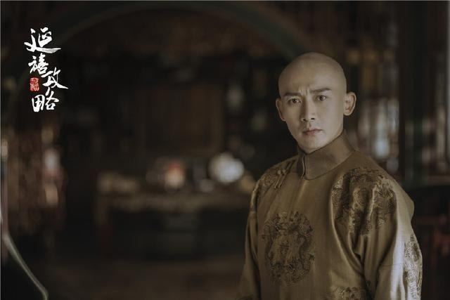
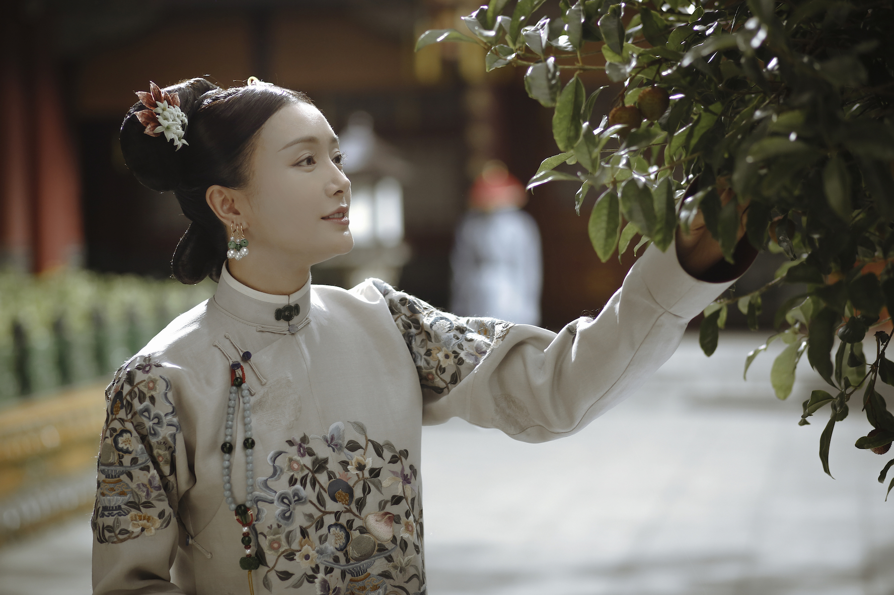
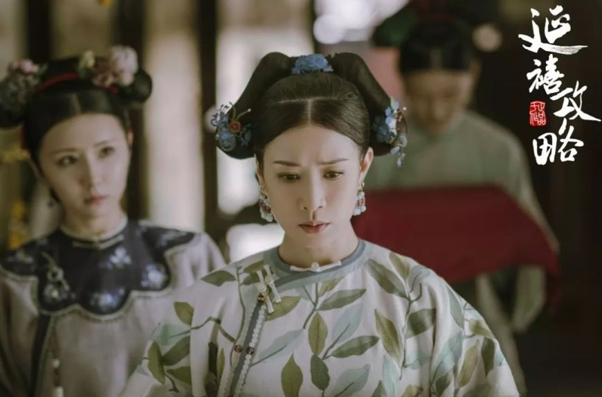
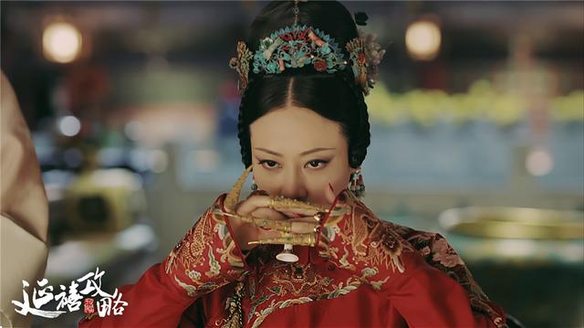

<html>
<head>

</head>
<meta charset="UTF-8">
</html>
<style>
body{background-color:white}
.header {background-color: #f1f1f1; padding: 20px; text-align: center;}
nav {background-color:black; height: 60px;width:100%;font-size:20px;text-align:center;opacity:0.8;}
nav .content {
    width: 1280px;
    margin: 0 auto;
}
nav .content ul {
    font-size: 0;
}

nav .content  li{
    width: 20%;
    display: inline-block;
    vertical-align: top;
    color: #cdbe91;
    text-align: center;
    font-size: 20px;
}
nav .content li a {
    display: inline-block;
    box-sizing: border-box;
    padding-top: 12px;
    color: #cdbe91;
    height: 60px;
}
nav .content li a:hover{opacity:0.6;}

* {box-sizing: border-box;}


.column {margin: auto;width:55%;height:2800px; padding: 30px 0px;overflow:auto;}
.column img#a{width:100%;height:auto;}
.column table img{width:100%;height:auto;}
table{width:100%;height:800px;}

tr{height:200px;margin:5px 0px;background-color:#FFE4E1;}
tr:nth-child(even) {height:200px;background-color:#FAF0E6}
th{position:left;}
td { width:60%;height: 20px;text-align:left; }

h1{font-family:微軟正黑體;}
p{font-family:標楷體;}
.footer {height:80px; background-color: gray; text-align: center;}


</style>
<body>

<nav>

<div class="content">
<ul>
	<li><a href="#">
		<div></div>延禧攻略</a></li>
	<li><a href="#">角色介紹</a></li>
	<li><a href="#">劇情介紹</a></li>
	<li><a href="#">劇中音樂</a></li>
</ul>


</div>
</nav>

<div class="column">
 
<hr>
	<table>
	<tr><th></th><td><h1>魏瓔珞</h1><hr><p>正直堅強，機智靈敏。母親生其而亡，姐姐魏瓔寧代母職，感情要好。為調查姐姐死亡原因，入紫禁城為宮女。</p></td></tr>

	<tr><td><h1>愛新覺羅·弘曆</h1><hr><p>乾隆帝</p></td><th></th></tr>

	<tr><th></th><td><h1>富察·容音</h1><hr><p>溫雅端莊，賢良淑德，雖出身名門望族卻恭儉，平居冠通草絨花，不御珠玉。與魏瓔珞亦師亦友，相伴相持，將其看做了自己的希望。</p></td></tr>

	<tr><td><h1>富察·傅恆</h1><hr><p>富察氏孝賢純皇后的弟弟，出身於名門，是乾隆身邊舉足輕重的人物。被瓔珞利用報仇，卻喜歡上她。始終放不下瓔珞，並默默守護著她。</p></td><th></th></tr>

	<tr><th></th><td><h1>輝發那拉·淑慎</h1><hr><p>前期性格溫柔和順，淡泊善良，後期性格心思挺重，陰險歹毒。一心戀慕乾隆帝。既不依附於皇后富察容音，也婉拒高寧馨的籠絡。一身才華卻不爭不鬥，遠離勾心鬥角，卻在高寧馨煽風點火下，導致家族生變而黑化。</p></td></tr>

	<tr><td><h1>高寧馨</h1><hr><p>善崑曲，又因父親治水有功，而深受皇上寵愛。事事與皇后富察容音作比較，更嫉妒皇帝偏愛皇后。</p></td><th></th></tr>
	</table>
</div>


<div class="footer">
</div>


</body>